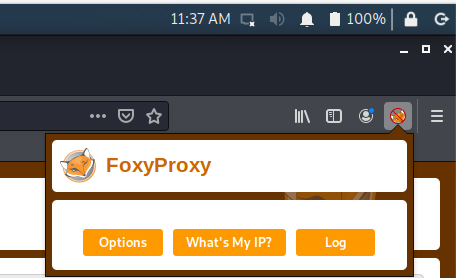
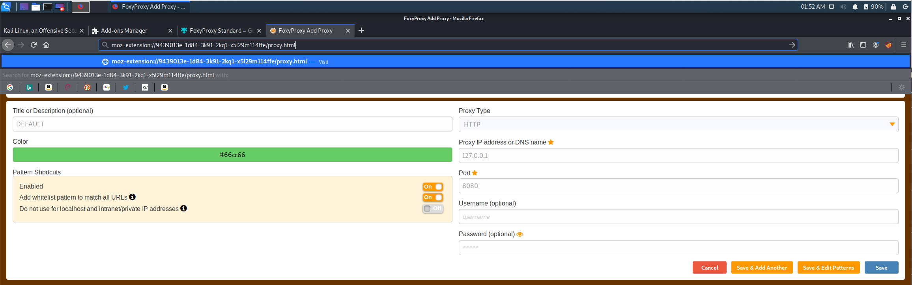
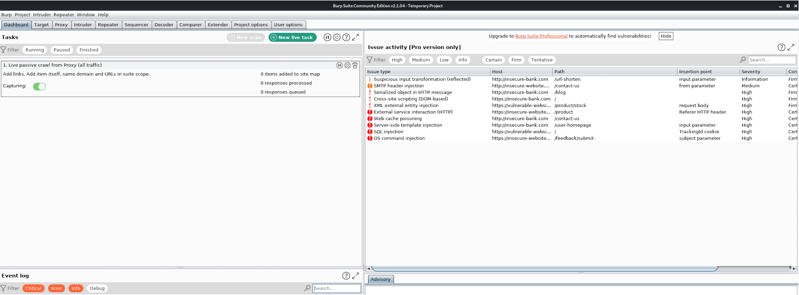
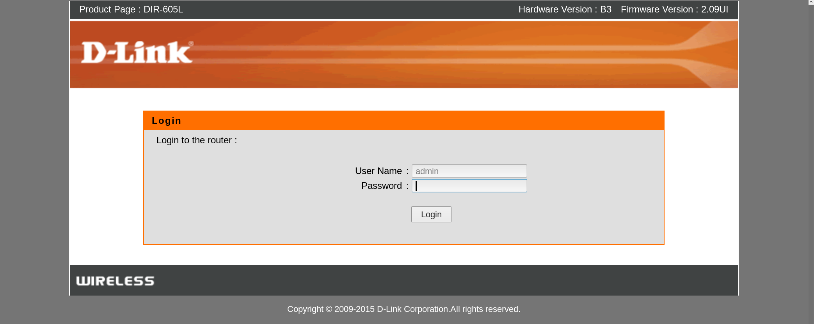
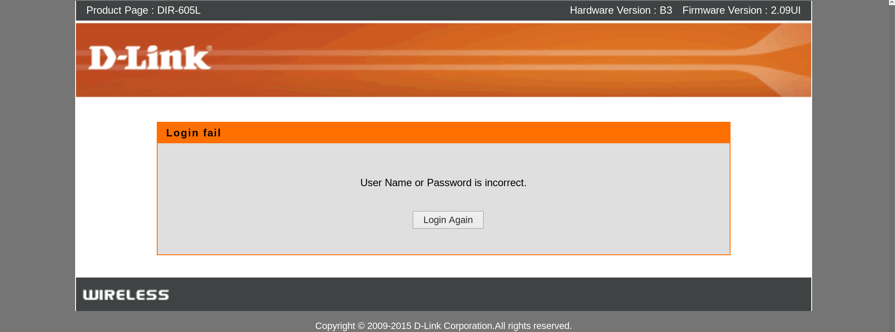
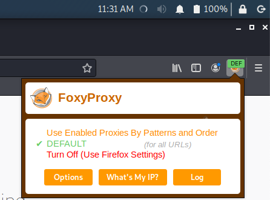
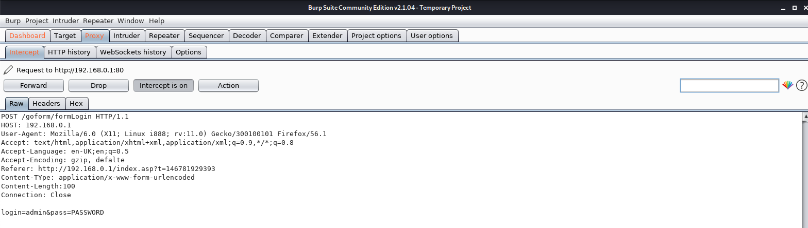
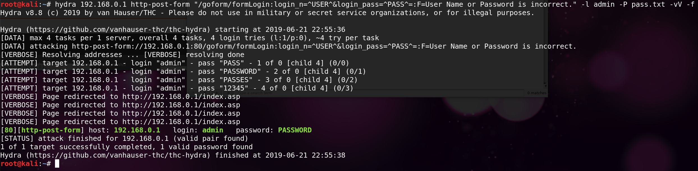

Network and MITM attacks
Brute forcing the router admin interface
This chapter is meant for when the default credentials for the router admin login interface do not work and you're unable to access the router administrator webpage. This could mean the owner of the WiFi network changed the default router admin password preventing anyone from accessing it.
Usually
the default username is left alone, if there is one at all, so we can assume that the username will not be changed.
Let's say you want to have access to the admin interface to either enable port forwarding for your RAT, change the router DNS settings, maybe change the password locking the owner out and keeping it for yourself (most "average users" wouldn't know how to access it anyways) disable certain functions, or to ensure logging is disabled. We'll need to try a brute force dictionary attack to hack our way into the interface trying password after password from a password list against the login portal until we've either exhausted our efforts or we've gained access.
A brute force dictionary attack is basically trying numerous passwords line by line from a wordlist until we either find the correct password or exhaust our wordlist. Obviously the amount of time it will take to crack a password is going to depend on multiple factors, such as the complexity of the password, the speed of the network, the speed in which the protocol can parse login requests, and whether or not any account locking or delays are introduced on incorrect logins.
In this chapter I'm using my router as an example but this methodology can be applied to any router. Hopefully you can learn and understand from my examples.
It's important to have a username for the router we're targeting. In order to find the default username we'll use the same websites we used before in determining the default credentials for the router and pull the username from that to give us a starting point. Without a username it's not recommended to brute force the login page because brute forcing both the username and password isn't practical and will take you 10,000,000,000,000 years to complete. Don't waste your time with that shit. Stick with the most common wordlists and if they don't work move along but before giving up completely always try the Wi-Fi network password as the router interface login password as some users simply re-use their passwords for everything Wi-Fi related. If that doesn't work and you've tried the default credentials for the router login page then it's time to brute force that shit.
Before we talk about using the tool Hydra for performing a brute force dictionary attack against the router login page we first need to capture the data being sent to the login page through the web browser. Hydra requires input we must obtain for it on our own in order for it to function properly so we need to collect this for Hydra. To get the input we require for this we're going to use FireFox with a HTTP proxy to intercept all web requests. The HTTP proxy tool we'll be using is called Burp Suite. If this is your first time using Burp Suite then congratulations you've taken the first step towards elite hacker status and if not this should be fairly straight forward for you. Getting familiar with Burp Suite is a must if you plan on targeting companies/organizations in the future. Don't be intimidated using it. When I first started using a HTTP proxy back in the day I was intimidated and hesitant about using it because I felt it was above me. This is far from the truth. Don't be intimidated! You can't fuck anything up because you're using Kali in a VM and
IF
you do fuck it up you can just re-install the Kali VM, install the pre-requisites, and off you go.
Note: You could just use Burp Suite to brute force the router login page but the Burp Suite free community edition that comes installed with Kali throttles the amount of requests you're able to perform which makes the whole process longer.
For the people who don't use Burp Suite please follow along to setup your HTTP proxy. In Kali click on the Kali icon in the top left of the screen and open the web browser. Once FireFox is running hit CTRL+SHIFT+A on your keyboard and search for "FoxyProxy Standard", click on "FoxyProxy Standard", then "+ Add to Firefox" in blue, and click "Add". Once it's installed you'll be greeted with the authors page and you'll notice a new icon on your tool bar on the top right hand side like the screenshot below.
Click on the FoxyProxy icon, then "Options", and then "Add".

Enter everything in your settings as you see below and then click Save. Leave FireFox open.

We named it "DEFAULT", Proxy Type is HTTP (should be obvious since we're intercepting web requests), the IP address is set to your localhost (127.0.0.1), and the port set to 8080 which is what Burp Suite is listening on. Make sure you click save to ensure your web browser is setup to intercept web requests by Burp Suite before going to the internets.
Next go into Terminal and type:
burpsuite
I suggest not sending any information to the company and unchecking it before clicking continue. Once it loads you'll be greeted with the setup and you can just click "Next" and then "Start Burp". Burp Suite will load and you'll be presented with the following:

Next before we enable our HTTP proxy we want to see what happens when we try and access the router login page with the wrong password. For this example we're targeting the router on 192.168.0.1 with a valid password of "PASSWORD" for the admin interface. You can follow along by targeting your own router or just read through.
In the URL I enter the router IP and visit http://192.168.0.1 which we're presented a router login portal. In the example below the model of the D-Link router automatically selected the default username for me. How convenient! If we weren't presented the username we would need to look up the default username for that router make and model in order to get it.

Every time you're going to brute force anything "web" related you want to enter the
WRONG
credentials first to see what's displayed to you when you do so. I know the right password to the router admin login portal is "PASSWORD" so I enter something different.

"User Name or Password is incorrect."
is what's displayed to us in this example. This will become important later on in the next few paragraphs but we always want to see what's displayed to us when entering the
WRONG
credentials. Once we've seen what's displayed to us when the wrong password is entered take note of what it was and reload the router admin webpage and let's start fresh.
When you've reloaded the webpage and are ready to enter credentials to login click on the FoxyProxy icon and select the "Default (for all URLs)" in
green
.

You should see "DEFAULT" in
green
as well if you entered everything as I said to when we setup our FoxyProxy.
Now back to FireFox. You'll notice in my example below when I'm at the router login page I enter the password "PASSWORD" and hit enter. If you do the same you'll notice that FireFox hangs and doesn't display anything, it just waits there. Go back to Burp Suite and you'll notice the "Proxy" tab is orange in color now. Click on the "Proxy" tab to see the HTTP POST data that's captured and intercepted before being sent to the website. This is the HTTP proxy in action capturing the HTTP POST data being sent from your web browser to the website. Everything here you can alter before it's sent to the website which is out of scope for this guide. Leave it as is and pay attention to where your username and password is being entered into the "POST" request.
Here's what happened when I entered "PASSWORD" and captured the HTTP POST request through Burp Suite.

Pay attention to the first line of the captured request:
"POST /goform/formLogin HTTP/1.1"
"/goform/formLogin"
is the path where the credentials are being sent to and we'll need that to tell Hydra where to send the password attempts to. In this case when we enter our credentials and hit enter on the router login page they're being sent to http//192.168.0.1/goform/formLogin
The credentials captured by Burp Suite in the screenshot above are my HTTP POST data which is:
login=admin&pass=PASSWORD
We need to collect all this data in order to feed it to the Hydra password cracking tool so Hydra understands what and where to attack on the login webpage, etc.
For the example I'm using here we can clearly see the credentials being sent over the network to the router login page. The username is "admin" and since we entered "PASSWORD" into the password field we also can see the password being sent to the router login portal. Now we have everything we need for Hydra to do a brute force dictionary attack on the router login page. This example also demonstrates how HTTP requests are sent over the network in plaintext and just like we intercepted them with Burp Suite we can basically read what's being sent over the network with no problems. If we were sniffing the network and other people logged in to their router admin interface we would see the credentials which we could use for later.
We know for my examples used here the password to the router login page is "PASSWORD" since I set the password up for this example so I want my brute forcing wordlist to contain "PASSWORD". If you're attacking your own router admin interface make sure you include the proper password in your password list. Hydra will notify you when you've found the correct password if the attack is successful.
To demonstrate Hydra open a new Terminal window and make your password list file.
echo PASS > pass.txt
echo PASSWORD >> pass.txt
echo PASSES >> pass.txt
echo 12345 >> pass.txt
Take note the order of my syntax as I found Hydra doesn't function properly if done in a different order. Maybe I'm trippin from all the meth I've been doing over the past 30,541 days while writing this guide but that's what I found. You would obviously replace the IP with the router IP and "pass.txt" with an actual wordlist such as "/usr/share/wordlist/rockyou.txt" when using this against real targets.
hydra 192.168.0.1 http-post-form "/goform/formLogin:login=^USER^&pass=^PASS^:F=User Name or Password is incorrect." -l admin -P pass.txt -vV -f

Breaking down the syntax is as follows:
http-post-form
tells Hydra you're targeting a web login form HTTP POST data.
/goform/formLogin
is the path we need to tell Hydra where the login page is.
login=^USER^&pass=^PASS^
is the POST data we catpured from Burp Suite but we replaced "admin" and "PASSWORD" with "^USER^" and "^PASS^" in order to tell Hydra where the username and password fields are. This way Hydra knows what and where to brute force.
F=User Name or Password is incorrect
tells Hydra what is displayed when failed credentials are entered.
The failed login comments are good for Hydra to determine success and failure.
-l admin
states that you're using "admin" as the username.
-P pass.txt
is the password file with passwords in it line by line.
-f
tells Hydra to stop once it finds a successful match.
-vV
to be verbose and show the attempts.
Best to disable this when using in the wild. Too much data flying by on the screen IMO.
As you can see from my examples we were able to crack the password of the router by using the wordlist we created and launched a brute force dictionary attack against the router admin web interface. In the wild you'll encounter similar examples of various type of routers. You would use a wordlist that comes pre-installed with Kali, create your own, or download a wordlist from other sources. Google is your friend when finding larger wordlists to use against targets with a brute force dictionary attack. This includes other languages depending on where you live. If you live in Estonia then download an Estonian dictionary to use as your wordlist when attempting to crack the router login interface. You get what I mean.
What I do is compile all the password leak database dumps from any company/place I'm able to find leaked online. The reason why I do this, depending on what I'm cracking, is password database dumps from XYZ company/website that get leaked onto the internet (Google is your friend) give you insight into average user password creating habits and knowing average user behavior habits when it comes to creating a password wordlist is an excellent wordlist. So, the wordlist I use is huge 30GB+ but I use it for certain things. Create your own for your needs.
In general though, if you're unable to brute force the password on the router login page with the wordlists in Kali (/usr/share/wordlists) then you should give up your efforts against the target. Unless compromising the router admin/web interface login form is a must then let Hydra run for thousands of fucking years fools! The chance of you "guessing" the password just isn't going to happen so unfortunately if you cannot crack it within a reasonable amount of time then call it a day and move along. No need to sit there for eternity trying password after password turning into dust.
Also, each router functions differently and just because you're aware of how to "properly" launch these attacks doesn't mean you're always going to have %100 success. Just because you have elite hacker status doesn't mean you're actually able to compromise everyone and everything you decide to target. Some routers POST data can be difficult to interpret or not possible to easily pick out the details you require. Routers are configured in so many different ways. Know your skill levels friends.
In this chapter you should be familiar with:
Capturing what's displayed to you when you're using wrong credentials on the router login.
Using Burp Suite to intercept HTTP POST requests to the router admin login page.
Using Hydra to brute force the login with a wordlist of your choosing.
Click to continue to Chapter 9